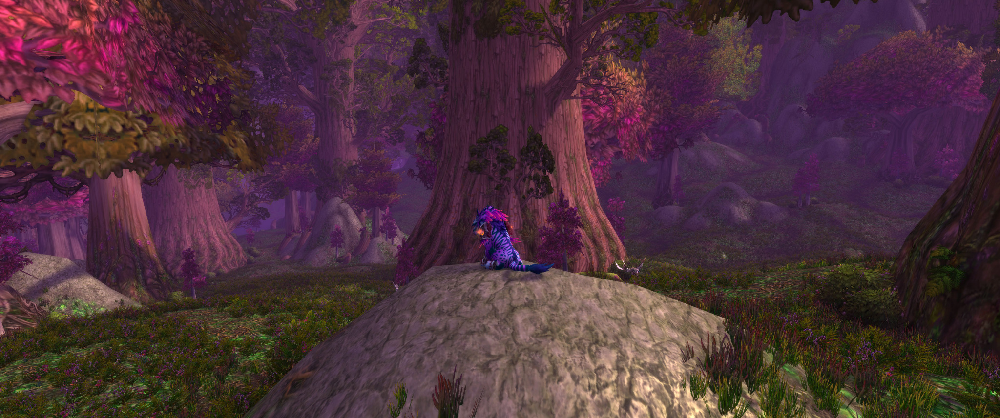
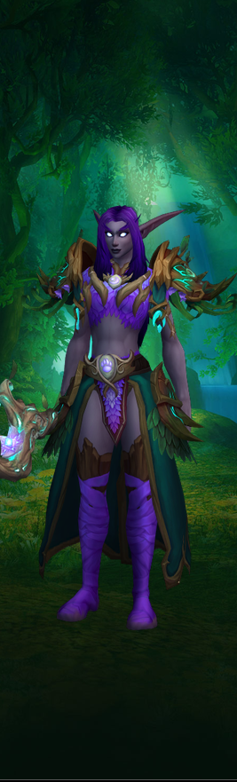

0101 / THE DRUID BEHIND THE CLAWS
Grace of the moon.
Ambition of a tiger.
Some druids are born legends. The rest of us make an entrance and hope nobody checks the meters.
I'm Tigress Shadowclaw: night elf, feral druid, enthusiastic troublemaker, and future terror of Azeroth. I stalk the emerald places of the world with my claws sharp, my confidence sharper, and just enough self-awareness to know when my friends are carrying the group.
I'll get there. One day, the bards will sing of my greatness. Until then, please admire my transmog.
A LITTLE MORE ABOUT ME ↗
☾
THE GIRL IN THE GLOOMFeral by nature. Fabulous by choice.
✧